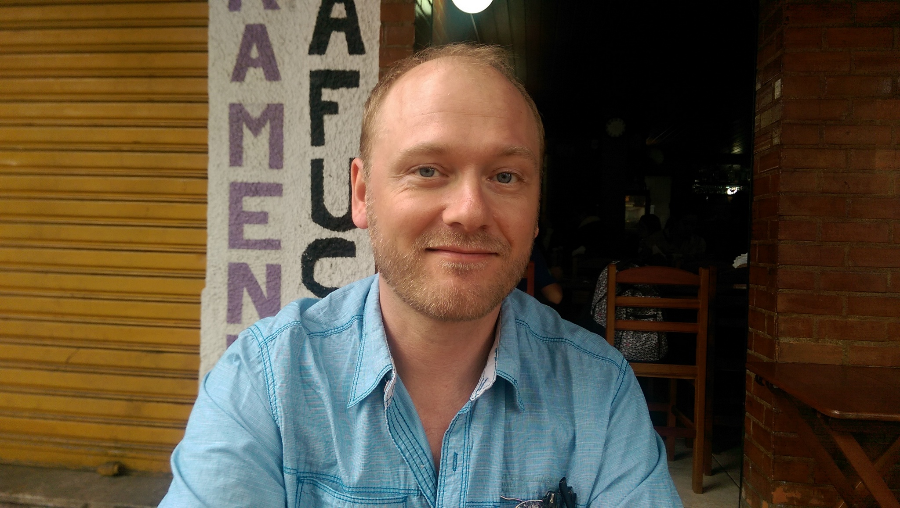

Dates: Dec. 9, 11, 13 (tentative)
Time: 10:00am – 12:00pm (tentative)
Location: TBA
Welcome to the Workshop on Statistics for Linguistics held at the University of Manitoba in December, 2019. This page will provide you with a brief description of what you can expect, and a variety of links and other useful information for your reference.
This workshop is for people who have “some background in R”, such as writing up code, loading data, and printing plots and graphs. This does not need to be extensive experience, and we will have time to review & refresh your knowledge at the beginning, or throughout as necessary. We are expecting between 12–15 people, although that may change.
The workshop is intended to cover the use of the R programming language to carry out testing of statistical models for the analysis of quantitative linguistic data (hence the title of the workshop), although we will probably look at examples using other data as well, because the tests themselves don’t care where the data comes from or what it’s about.
Other than bringing yourself of course, you will probably want to bring a laptop with R and RStudio installed. Choice of operating system shouldn’t be that important, but I’ll be using a Mac if anyone cares. I will be running the workshop via my laptop projected on the screen, and you can just observe if you like, but you’re probably not going to get the most out of the workshop that way, so I’m going to just assume everyone will have and be bringing a functioning laptop.
It would be helpful if everyone downloaded and installed both R and RStudio prior to the first day, although if you do have issues with that we can try and manage that on the first day.
RStudio: https://rstudio.com/products/rstudio/download/
(get the free Desktop version, unless you have a spare $1K per year, or feel like running a server?)
RStudio Cheat Sheets: https://rstudio.com/resources/cheatsheets/
These are a great resource to keep on hand for quick reference; I recommend the RStudio IDE, Base R, Data Transformation and Data Visualization Cheat Sheets for anyone getting started.
We will be referencing at least two online books, both of which were written in R Markdown and are available both as standalone websites, as well as in source code. I highly recommend that you access the source code for each, which can be downloaded directly as a .zip file from the respective GitHub pages below, as I will be working directly from these files in the workshop. To download the source code files, go to the indicated links below, click the Clone or download button, and select either Download ZIP (most users) or Open in Desktop (if you already know what you’re doing in GitHub).
R for Data Science (R4ds): https://r4ds.had.co.nz/
Source code: https://github.com/hadley/r4ds
This is co-written by Hadley Wickham, who is the author of the tidyverse family of R packages, and is an excellent reference which we will be using in the workshop.
Quantitative Methods for Linguistic Data: http://people.linguistics.mcgill.ca/~morgan/book/
Source code: https://github.com/mlml/stats_book
This book assumes a lot more background in stats, so we won’t be starting here, but it does deal specifically with application to linguistic data, and common types of statistical analysis in our field, so we will also be looking at this book.
Data wrangling, exploration, and analysis with R: https://stat545.com/index.html
Source code: https://github.com/rstudio-education/stat545
This book is focused on data and file management and not on statistical analysis, but I may use some parts of this in the workshop if I feel it’s appropriate or would be helpful as we go along.